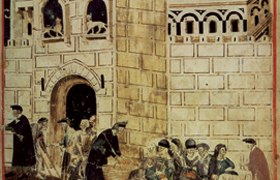

Lezione 9  Prima globalizzazione Europea
Prima globalizzazione Europea

Tra l’XI e il XIII secolo l’Europa ebbe un periodo di risveglio della vita urbana e di sviluppo demografico, agricolo, tecnologico e commerciale. Nuovi strumenti, come l’aratro pesante munito di due ruote o il mulino ad acqua, e nuove tecniche per la coltivazione, quali la rotazione delle colture e il campo lasciato a maggese, fecero aumentare la produzione agricola, e di conseguenza ridussero la mortalità. Questo provocò una crescita demografica, che permise a sua volta a un numero consistente di persone di abbandonare le campagne per spostarsi a vivere nelle città, senza che questo comportasse lo spopolamento delle campagne. Il fenomeno di inurbamento favorì lo sviluppo dell’artigianato, in particolare della lavorazione tessile, e incrementò la circolazione di merci su scala internazionale, poiché le città costituivano un ottimo centro di scambio e di consumo. Con l’aumento del commercio i mercanti si organizzarono sempre di più e sempre meglio, specialmente nei Comuni medievali dell’Italia settentrionale e nelle città fiamminghe, dove nacquero associazioni, corporazioni, università. L’economia divenne dinamica, diventò più ampia la conoscenza del mondo, aumentò la curiosità nei confronti di usanze e costumi lontani. Insieme alle merci circolavano anche i saperi: lo sviluppo fu anche culturale.